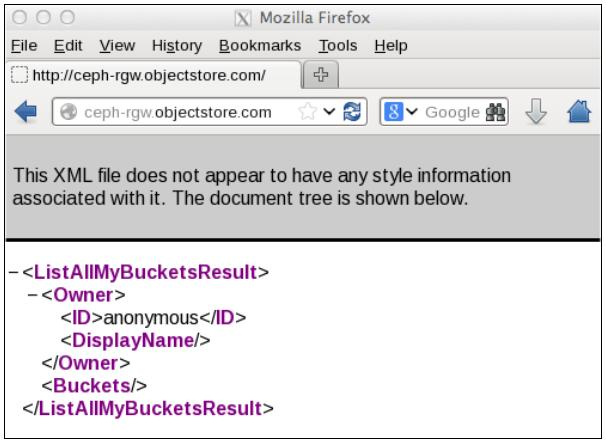

Глава 6. Подготовка хранилища к работе в Ceph
В данной главе мы рассмотрим следующие темы:
-
Настройка блочного устройства Ceph
-
Настройка файловой системы Ceph
-
Настройка хранилища объектов Ceph с использованием шлюза RADOS (Безотказного автономного распределенного хранилища объектов - Reliable Autonomic Distributed Object Store)
-
Конфигурирование S3 и Swift с использованием шлюза Ceph RADOS
Подготовка хранилища к работе является первичной и наиболее важной задачей системного администратора хранилища. Это процесс назначения пространства или емкости хранилища физическим или виртуальным серверам в виде блоков, файлов или объектов. Обычные вычислительные системы и серверы выпускаются с ограниченным локальным пространством хранения, которого не достаточно для ваших потребностей в хранении данных. Решения для хранения данных, подобные Ceph, обеспечивают практически неограниченные возможности хранения для таких серверов, что делает способными хранить все ваши данные и при этом пребывать в уверенности, что вам хватит места.
Содержание
Помимо предоставления дополнительного пространства хранения существуют многочисленные преимущества наличия централизованной системы хранения.
Ceph может предоставить пространство для хранения единым образом, который включает блочное хранилище, файловую систему и хранилище объектов. В зависимости от вашего варианта использования, вы можете выбирать один или несколько вариантов решений хранения как показано на следующем рисунке. Теперь давайте обсудим эти типы хранения в деталях и реализуем их в нашем тестовом кластере.
Блочное устройство RADOS(RBD, RADOS block device
/Безотказное автономное распределенное хранилище объектов - Reliable Autonomic Distributed Object Store/) —
ранее известное как блочное устройство Ceph — предоставляет клиентам Ceph постоянное хранилище на основе блоков,
которое они используют в качестве дополнительного диска. Клиент получает гибкость использования диска как ему нужно,
либо в виде исходного устройства, либо отформатировав его с файловой системой с последующим монтированием. Блочное
устройство RADOS использует библиотеку librbd и хранит блоки данных в последовательном виде разделенными на полосы на
множестве OSD в кластере Ceph. RDB поддерживается уровнем RADOS в Ceph, и, таким образом, каждое блочное устройство
распространяется на несколько узлов Ceph, обеспечивая высокую производительность и высокую надежность. BBD наполнено
широкими корпоративными возможностями, такими как динамическое выделение, динамичное изменение размера, моментальные снимки,
копирование при записи, а также кэшированием, помимо всего прочего. Протокол BBD полностью поддерживаются Linux в
виде драйвера основной ветви ядра; он также поддерживает различные платформы виртуализации, такие как KVM, Qemu и libvirt,
позволяя виртуальным машинам получать преимущества блочных устройств Ceph. Все эти особенности делают RBD идеальным кандидатом
для облачных платформ, таких как OpenStack и CloudStack. Теперь мы узнаем, как создать блочное устройство Ceph, а также
как использовать его:
-
Чтобы создать блочное устройство Ceph, зарегистрируйтесь на любом из узлов мониторов Ceph или на хосте администрирования, который имеет доступ к кластеру Ceph с правами администратора. Вы также можете создать RBD из любого узла клиента, который настроен как клиент Ceph. По причинам безопасности вам не следует сохранять ключи администратора на множесетве узлов, отличных от клиентов Ceph и хостов администратора.
-
Следующая команда создаст блочное устройство RADOS с именем
ceph-client1-rbd1и размером 10240 МБ:# rbd create ceph-client1-rbd1 --size 10240
-
Для просмотра списка образов выполните следующую команду:
# rbd ls
-
Для контроля деталей образов RBD используйте следующую команду:
# rbd --image ceph-client1-rbd1 info
Давайте взглянем на следующий снимок экрана, чтобы посмотреть на предыдущую команду в действии:
[root@ceph-node1 ~]# rbd —-image ceph-client1-rbd1 info rbd image 'ceph-client1-rbd1': size 10240 MB in 2560 objects order 22 (4096 kB objects) block_name_prefi x: rb.0.1d63.2ae8944a format: 1 [root@ceph-node1 ~]# -
По умолчанию образы RBD создаются в пуле
rbd. Вы можете задать другой пул с помощью прааметра-pв командеrbd. Следующая команда приведет к тому же результату, что и предыдущая, однако мы вручную задали имя пула используя параметр-pздесь. Аналогично вы можете создавать образы RBD в другом пуле с помощью параметра-p:# rbd --image ceph-client1-rbd1 info -p rbd
Ceph является системой хранения; для сохранения ваших данных в кластере Ceph вам понадобится машина клиента. После того, как пространство хранения подготовлено к работе в кластере Ceph, клиент отображает или монтирует блок или файловую систему и позволяет нам сохранять данные в кластере Ceph. Для того, чтобы сохранять данные в хранилище объектов клиенты имеют HTTP доступ. Обычный кластер Ceph промышленного класса содержит две различные сети, сеть переднего плана и сеть заднего плана, также называемые общедоступной сетью и сетью кластера, соответственно.
Сеть переднего плана является сетью клиентов, через которую Ceph предоставляет данные своим клиентам. Клиенты не имеют доступ к сети заднего плана и Ceph в основном использует сеть заднего плана для репликаций и восстановления. Сейчас мы выполним установку первой виртуальной машины клиента Ceph, которую мы будем использовать на протяжении всей книги. В процессе настройки мы создадим новую виртуальную машину клиента, как мы это делали в Главе 2. Моментальное развертывание Ceph:
-
Создайте новую виртуальную машину VirtualBox для клиента Ceph:
# VboxManage createvm --name ceph-client1 --ostype RedHat_64 --register # VBoxManage modifyvm ceph-client1 --memory 1024 --nic1 nat --nic2 hostonly --hostonlyadapter2 vboxnet1 # VBoxManage storagectl ceph-client1 --name "IDE Controller" --add ide --controller PIIX4 --hostiocache on --bootable on # VBoxManage storageattach ceph-client1 --storagectl "IDE Controller" --type dvddrive --port 0 --device 0 --medium /downloads/CentOS-6.4-x86_64-bin-DVD1.iso # VBoxManage storagectl ceph-client1 --name "SATA Controller" --add sata --controller IntelAHCI --hostiocache on --bootable on # VBoxManage createhd --filename OS-ceph-client1.vdi --size 10240 # VBoxManage storageattach ceph-client1 --storagectl "SATA Controller" --port 0 --device 0 --type hdd --medium OS-cephclient1.vdi # VBoxManage startvm ceph-client1 --type gui
-
Когда виртуальная машина создана и запущена, установите операционную систему CentOS, придерживаясь слудующей документации установки операционной системы
https://access.redhat.com/site/documentation/en-US/Red_Hat_Enterprise_Linux/6/html/Installation_Guide/index.html. В процессе установке задайте хосту имяceph-client1. -
После успешной установки операционной системы отредактируйте настройку сети машины как это устанавливается в следующей последовательности шагов и перезапустите сетевые службы:
-
Измените файл
/etc/sysconfig/network-scripts/ifcfg-eth0и добавьте в него следующее:ONBOOT=yes BOOTPROTO=dhcp -
Измените файл
/etc/sysconfig/network-scripts/ifcfg-eth1и добавьте в него следующее:ONBOOT=yes BOOTPROTO=static IPADDR=192.168.57.200 NETMASK=255.255.255.0 -
Измените файл
/etc/hostsи добавьте в него следующее:192.168.57.101 ceph-node1 192.168.57.102 ceph-node2 192.168.57.103 ceph-node3 192.168.57.200 ceph-client1
-
Ранее в этой главе мы создали образы RBD в кластере Ceph; для того, чтобы использовать этот образ блочного устройства, мы должны поставить его в соответствие машине клиента. Давайте посмотрим как работает операция установления соответствия.
Поддержка Ceph была добавлена в ядро Linux начиная с версии 2.6.32. Для машин клиентов, которым необходим естественный доступ к блочным устройствам и файловым системам, рекомендуется использовать ядро Linux в редакции 2.6.34., или более поздней.
Проверьте версию ядра Linux и поддержку RBD, воспользовавшись командой modprobe.
Поскольку данный клиент работает с более старой версией ядра Linux, он не поддерживает Ceph естественным образом.
# uname –r # modprobe rbd
Давайте посмотрим на следующий снимок экрана:
[root@ceph-client1 ~]# uname -r 2.6.32-358.el6.x86_64 [root@ceph-client1 ~]# [root@ceph-client1 ~]# modprobe rbd FATAL: Module rbd not found. [root@ceph-client1 ~]#
Чтобы добавить поддержку Ceph мы должны модернизировать версию ядра Linux.
![[Замечание]](../common/images/admon/note.png) | Замечание |
|---|---|
|
Отметим, что данная модернизация ядра приводится здесь исключительно в демонстрационных целях для данной главы. В вашей промышленной среде вы должны планировать обновление ядра. Пожалуйста, принимайте взвешенное решение перед выполнением приводимых здесь шагов в вашем промышленном решении. |
-
Установите ELRepo rpm следующим образом:
# rpm -Uvh http://www.elrepo.org/elrepo-release-6-6.el6.elrepo.noarch.rpm
-
Установите новое ядро при помощи следующей команды:
# yum --enablerepo=elrepo-kernel install kernel-ml
-
Отредактируйте
/etc/grub.confизменитеdefault = 0и затем аккуратно перезагрузите машину.
После перезагрузки компьютера, проверьте версию ядра Linux и поддержку RBD, как мы это делали раньше:
[root@ceph-client1 ~]# uname -r 3.15.0-1.el6.elrepo.x86_64 [root@ceph-client1 ~]# [root@ceph-client1 ~]# modprobe rbd [rootOceph-client1 ~1#
Чтобы предоставить клиентам права на доступ к кластеру Ceph, нам необходимо добавить им кольцо ключей и файл настройки Ceph. Установление подлинности клиента и кластера Ceph основывается на кольце ключей. Пользователь с правами администратора Ceph имеет полный доступ к кластеру Ceph, следовательно, по причинам безопасности вам не следует распространять кольца ключей администратора на другие хосты, если они не требуют этого. Лучшей практикой будет создание отдельных пользователей с ограниченными возможностями для доступа в кластер Ceph с использованием их колец ключей для доступа к RBD. В последующих главах мы уделим больше внимания пользователям Ceph и кольцам ключей.
Установите исполняемые файлы на ceph-node1 и поместите в нем
ceph.conf и ceph.admin.keyring
# ceph-deploy install ceph-client1 # ceph-deploy admin ceph-client1
После того, как в узле ceph-node1 размещены файл настройки и
кольцо ключей администратора, вы можете запросить в кластере Ceph образы RBD:
[root@ceph-client1 ceph]# pwd
/etc/ceph
[root@ceph-client1 ceph]# ls -l
total 8
-rw-r-—r—-. 1 root root 137 Jun 12 21:16 ceph. client.admin. keyring
-rw-r-—r--. 1 root root 573 Jun 12 21:16 ceph.conf
[root@ceph-clientl ceph]# rbd ls
ceph-client1-rbd1
[root@ceph-client1 ceph]#
[root@ceph-client1 ceph]# rbd info —-image ceph-clien1-rbd1
rbd image 'ceph-client1-rbd1':
size 10240 MB in 2560 objects
order 22 (4096 kB objects)
block_name_prefix: rb.0.1d63.2ae8944a
format: 1
[root@ceph-client1 ceph]#
Установите соответствие образу RBD ceph-client1-rbd1 для машины
ceph-node1. Поскольку RBD в настоящее время поддерживаются
естественным образом ядром Linux, вы можете с машины ceph-node1
для установления соответствия RBD следующую команду:
# rbd map --image ceph-client1-rbd1
В качестве альтернативы, вы можете воспользоваться командой для определения имени пула образа RBD
и можете получить тот же результат. В нашем случае именем пула будет rbd,
как объяснялось ранее в данной главе:
# rbd showmapped
Следующий снимок экрана демонстрирует эту команду в действии:
[root@ceph-client1 ceph]# rbd map --image ceph-client1-rbd1 [root@ceph-client1 ceph]# rbd showmapped id pool image snap device 0 rbd ceph-client1-rbd1 - /dev/rbdO [root@ceph-client1 ceph]#
После установления соответствия блочное устройство RADOS операционной системе, мы должны создать на нем файловую систему, чтобы сделать его пригодным к использованию. Теперь RBD может быть использовано как дополнительный диск или блочное устройство:
# fdisk -l /dev/rbd0 # mkfs.xfs /dev/rbd0 # mkdir /mnt/ceph-vol1 # mount /dev/rbd0 /mnt/ceph-vol1
Взглянем на следующий снимок экрана:
[root@ceph-client1 ceph]# mkfs.xfs /dev/rbdO
log stripe unit (4194304 bytes) is too large (maximum is 256KiB)
log stripe unit adjusted to 32KiB
meta-data=/dev/rbdO isize=256 agcount=17, agsize=162816 blks
= sectsz=512 attr=2, projid32bit=0
data = bsize=4096 blocks=2621440, imaxpct=25
= sunit=1024 swidth=1024 blks
naming =version 2 bsize=4096 ascii-ci=0
log =internal log bsize=4096 blocks=2560, version=2
= sectsz=512 sunit=8 blks, lazy-count=l
realtime =none extsz=4096 blocks=0, rtextents=0
[root@ceph-client1 ceph]#
[root@ceph-client1 ceph]# mkdir /mnt/ceph-vol1
[root@ceph-client1 ceph]# mount /dev/rbd0 /mnt/ceph-vol1
[root@ceph-client1 ceph]# df -h
Filesystem Size Used Avail Use% Mounted on
/dev/mapper/vg_cephnode1-lv_root
7.3G 2.4G 4.6G 35% /
tmpfs 499M 72K 499M 1% /dev/shm
/dev/sda1 477M 52M 396M 12% /boot
/dev/rbdO 10G 33m 10G 1% /mnt/ceph-voll
[root@ceph-client1 ceph]#
Поместим в Ceph RBD какие-нибудь данные:
# dd if=/dev/zero of=/mnt/ceph-vol1/file1 count=100 bs=1M
[root@ceph-client1 ceph-vol1]# dd if=/dev/zero of=/mnt/ceph-vol1/file1 count=100 bs=lM 100+0 records in 100+0 records out 104857600 bytes (105 MB) copied, 0.286933 s, 365 MB/s [root@ceph-client1 ceph-vol1]# [root@ceph-client1 ceph-vol1]# [root@ceph-client1 ceph-vol1]# [root@ceph-client1 ceph-vol1]# ls -la total 102404 drwxr-xr-x. 2 root root 18 Jun 14 21:13 . drwxr-xr-x. 3 root root 4096 Jun 12 21:28 .. -rw-r-—r-—. 1 root root 104857600 Jun 14 21:13 file1 [root@ceph-client1 ceph-vol1]#
Ceph поддерживает динамично выделяемые блочные устройства, т.е. физическое пространство под хранение не выделяется пока вы не не начнете реальное сохранение данных на блочное устройство. Блочное устройство RADOS в Ceph очень гибкое; вы можете увеличивать или уменьшать размер RBD на лету со стороны хранилища Ceph. Однако, используемая в основе файловая система должна поддерживать изменение размеров. Современные файловые системы, такие как XFS, Btrfs, EXT и ZFS поддерживают изменение размеров файловой системы в некоторой степени. Чтобы получить дополнительную информацию об изменении размеров, обратитесь к документации по соответствующей файловой системе.
Для увеличения или уменьшения размера образа RBD Ceph воспользуйтесь параметром --size
в команде rbd resize, которая установит новый размер для образа RBD. Начальный размер
образа RBD ceph-client1-rbd1 составлял 10ГБ; следующая команда увеличит
его размер до 20ГБ:
# rbd resize rbd/ceph-client1-rbd1 --size 20480
[root@ceph-node1 ~]# rbd resize -—image ceph-client1-rbd1 -—size 20480
Resizing image: 100% complete...done.
[root@ceph-node1 ~]#
[root@ceph-node1 ~]# rbd info -—image ceph-client1-rbd1
rbd image 'ceph-client1-rbd1':
size 20480 MB in 5120 objects
order 22 (4096 kB objects)
block_name_prefix: rb.0.1d63.2ae8944a
format: 1
[root@ceph-node1 ~]#
Теперь, когда размер образа RBD Ceph был изменен, вы должны удостовериться, что новый размер был воспринят ядром надлежащим образом, выполнив следующую команду:
# xfs_growfs -d /mnt/ceph-vol1
[root@ceph-client1 /]# xfs_growfs -d /mnt/ceph-vol1
meta-data=/dev/rbdO isize=256 agcount=17, agsize=162816 blks
= sectsz=512 attr=2, projid32bit=0
data = bsize=4096 blocks=2621440, imaxpct=25
= sunit=1024 swidth=1024 blks
naming =version 2 bsize=4096 ascii-ci=0
log =internal bsize=4096 blocks=2560, version=2
= sectsz=512 sunit=8 blks, lazy-count=l
realtime =none extsz=4096 blocks=0, rtextents=0
data blocks changed from 2621440 to 5242880
[root@ceph-client1 /]#
[root@ceph-client1 /]#
[root@ceph-client1 /]# df -h
Filesystem Size Used Avail Use% Mounted on
/dev/mappe r/vg_cephnode1-lv_root
7.3G 2.2G 4.8G 315% /
tmpfs 499M 112k 499m 1% /dev/shm
/dev/sda1 477M 52M 396M 12% /boot
/dev/rbd0 20G 134M 20G 1% /mnt/ceph-vol1
[root@ceph-client1 /]#
С клиентской машины увеличение файловой системы ведет к к использованию бОльшего размера пространства хранения. С точки зрения клиента способность изменения размеров является функцией файловой системы операционной системы; перед изменением размера раздела вам следует ознакомиться с документацией по файловой системе. Файловая система XFS поддерживает изменение размеров в реальном времени.
Ceph расширяет полную поддержку моментальных снимков, которые являются временной точкой, копиями только для чтения образа RBD (блочных устройств RADOS). Вы можете сохранять состояние образа RBD Ceph создавая снимки и восстанавливая их для получения исходных данных.
Для проверки функциональности снимков Ceph RBD давайте создадим файл в RBD:
# echo "Hello Ceph This is snapshot test" > /mnt/cephvol1/snaptest_file
[root@ceph-client1 ceph-vol1]# echo "Hello Ceph This is snapshot test" > /mnt/ceph-vol1/snaptest_file [root@ceph-client1 ceph-vol1]# ls -l total 102404 -rw-r—-r—-. 1 root root 104857600 Jun 14 21:13 filel -rw-r—-r—-. 1 root root 33 Jun 15 03:04 snaptest_file [root@ceph-client1 ceph-vol1]#
Теперь в нашей файловой системе есть два файла. Давайте создадим моментальный снимок RBD Ceph воспользовавшись синтаксисом
snap create <pool-name>/<image-name>@<snap-name>
следующим образом:
# rbd snap create rbd/ceph-client1-rbd1@snap1
Чтобы вывести список снимков образов используйте синтаксис
rbd snap ls <pool-name>/<image-name>
следующим образом:
[root@ceph-c1ient1 /]# rbd snap create rbd/ceph-client1-rbd1@snap1
[root@ceph-c1ient1 /]#
[root@ceph-c1ient1 /]# rbd snap ls rbd/ceph-client1-rbd1
SNAPID NAME SIZE
2 snapl 20480 MB
[root@ceph-c1ient1 /]#
Чтобы проверить функциональность восстановления RBD Ceph давайте удалим в файловой системе файлы:
# cd /mnt/ceph-vol1 # rm -f file1 snaptest_file
[root@ceph-client1 ceph-vol1]# rm -f file1 snaptest_file [root@ceph-client1 ceph-vol1]# ls -l total 0 [root@ceph-client1 ceph-vol1]#
Теперь мы восстановим моментальный снимок RBD Ceph, чтобы получить файлы, которые мы удалили шаг назад.
|
| Замечание |
|---|---|
|
Операция отката перепишет текущую версию образа RBD и все данные версией из моментального снимка. Вы должны аккуратно пользоваться данной операцией. |
Синтаксис для такой операции выгляди так
rbd snap rollback >pool-name>/<image-name>@<snapname>.
Ниже приводится команда:
# rbd snap rollback rbd/ceph-client1-rbd1@snap1
После выполнения операции отката повторно смонтируйте файловую систему RBD Ceph, чтобы обновить состояние файловой системы. Вы должны получить свои удаленные файлы назад.
# umount /mnt/ceph-vol1 # mount /dev/rbd0 /mnt/ceph-vol1
[root@ceph-client1 ceph-vol1]# rbd snap rollback rbd/ceph-client1-rbd1@snap1 Rolling back to snapshot: 100% complete...done. [root@ceph-client1 ceph-vol1]# [root@ceph-client1 ceph-vol1]# ls -l total 0 [root@ceph-client1 ceph-vol1]# [root@ceph-client1 ceph-vol1]# cd / [root@ceph-client1 /]# [root@ceph-client1 /]# umount /mnt/ceph-vol1 [root@ceph-client1 /]# [root@ceph-client1 /]# mount /dev/rbdO /mnt/ceph-vol1 [root@ceph-client1 /]# cd /mnt/ceph-voll/ [root@ceph-client1 ceph-voll]# ls -l total 102404 -rw-r-—r-—. 1 root root 104857600 Jun 14 21:13 file1 -rw-r--r--. 1 root root 33 Jun 15 03:04 snaptest_file [root@ceph-client1 ceph-vol1]#
Если вам больше не нужны снимки, вы можете удалить определенные снимки используя синтаксис
rbd snap rm <pool-name>/<image-name>@<snap-name>.
# rbd snap rm rbd/ceph-client1-rbd1@snap1
Если у вас есть множество снимков образов RBD и вы хотите удалить их все в одной команде,
вы можете воспользоваться подкомандой purge.
Ее синтаксис выглядит так rbd snap purge <pool-name>/<image-name>.
Следующий пример удаляет все снимки одной командой:
# rbd snap purge rbd/ceph-client1-rbd1
Синтаксис rbd rm <RBD_image_name> -p <Image_pool_name>
используется для удаления одного образа RBD, как показано ниже:
# rbd rm ceph-client1-rbd1 -p rbd
Кластер хранения Ceph способен создавать клоны копируемые-при-записи (COW, Copy-on-write) из снимков RBD. Это также известно в Ceph как разделение на слои в фиксированные моменты времени (snapshot layering). Такое свойство разделения на уровни позволяет клиентам создавать множество клонов экземпляра RBD Ceph. Это свойство очень полезно для облачных платформ и платформ виртуализации, таких как OpenStack, CloudStack и Qemu/KVM. Эти платформы обычно защищают образы RBD Ceph, содержащие образы OS/VM в виде моментальных снимков. Позже эти моментальные снимки клонируются много раз чтобы раскрутить новые виртуальные машины/ экземпляры. Моментальные снимки являются доступными только на чтение, однако клоны COW полностью доступны на запись, это свойство Ceph обеспечивает замечательную гибкость и чрезвычайно полезно для облачных платформ. Следующий рисунок показывает взаимосвязь между блочным устройством RADOS, моментальным снимком RBD и COW клоном снимка. В последующих главах этой книги мы обсудим более детально клоны COW для порождения экземпляров OpenStack.
Каждый клонированный образ (образ- потомок) сохраняет ссылки своего родительского образа для чтения данных образа. Следовательно, родительский снимок должен быть защищен перед тем, как он может быть использован для клонирования. Во время записи данных COW-клонируемых образов они сохраняют новые ссылки данных на себя. COW-клонируемые образы настолько же хороши, насколько хороши RBD.
Они достаточно гибки, подобны RBD, т.е. они доступны на запись, обладают изменяемым размером, могут создавать новые снимки и могут клонироваться дальше.
Тип образа RBD определяет поддерживаемые им свойства. Образы RBD в Ceph имеют два типа: format-1 и format-2. Свойства снимков RBD доступны доступны и для образов RBD format-1, и для образов RBD format-2. Однако, свойства разделения на уровни, т.е. возможность COW клонирования доступна только для образов RBD с format-2. Format-1 является форматом по умолчанию образов RBD.
Для демонстрационных целей мы сначала создадим образ RBD format-2, создадим его снимок, защитим этот снимок и, наконец, создадим его COW клоны:
-
Создайте format-2 образ RBD:
# rbd create ceph-client1-rbd2 --size 10240 --image-format 2
[root@ceph-node1 ~]# rbd create ceph-client1-rbd2 --size 10240 --image-format 2 [root@ceph-node1 ~]# [root@ceph-node1 ~]# rbd --image ceph-client1-rbd2 info rbd image 'ceph-clientl-rbd2': size 10240 MB in 2560 objects order 22 (4096 kB objects) block_name_prefix: rbd_data.20bd2ae8944a format: 2 features: layering [root@ceph-node1 ~]# -
Создайте снимок образа RBD
# rbd snap create rbd/ceph-client1-rbd2@snapshot_for_clone
-
Чтобы создать COW клон защитите снимок. Это важный шаг; мы должны защитить снимок, поскольку если снимок будет удален, все присоединенные COW клоны будут разрушены:
# rbd snap protect rbd/ceph-client1-rbd2@snapshot_for_clone
-
Клонируемому снимку требуются имена родительского пула, образа RBD и моментального снимка. Для потомка требуются имена пула и образа RBD.
Синтаксис этого таков
rbd clone <pool-name>/<parent-image>@<snapname> <pool-name>/<child-image-name>Используемая команда следующая:# rbd clone rbd/ceph-client1-rbd2@snapshot_for_clone rbd/cephclient1-rbd3
-
Создание клона является быстрым процессом. Когда он закончится, проверьте информацию нового образа. Вы увидите, что высветятся информация о его родительских пуле, образе и снимке.
# rbd --pool rbd --image ceph-client1-rbd3 info
[root@ceph-node1 ~]# rbd clone rbd/ceph-client1-rbd2@snapshot_for_clone rbd/ceph-client1-rbd3 [root@ceph-node1 ~]# [root@ceph-node1 ~]# [root@ceph-node1 ~]# rbd --pool rbd --image ceph-client1-rbd3 info rbd image 'ceph-client1-rbd3': size 10240 MB in 2560 objects order 22 (4096 kB objects) block_name_prefix: rbd_data.20c32eb141f2 format: 2 features: layering parent: rbd/ceph-client1-rbd2@snapshot_for_clone overlap: 10240 MB [root@ceph-node1 ~]#
На данный момент у вас есть образ RBD, который зависит от его родительского снимка образа. Чтобы сделать этот клонированный образ RBD независимым от его родителя, нам нужно выровнять (flatten) образ, что включает в себя копирование данных из родительского снимка в снимок потомка. Время, необходимое для выполнения процесса выравнивания, зависит от размера данных, присутствующих в родительском моментальном снимке. Когда процесс выравнивания завершен, больше не существует зависимости между клонированным образом RBD и породившим его снимком. Давайте выполним процесс выравнивания практически:
-
Для начала процесса выравнивания воспользуйтесь следующей командой:
# rbd flatten rbd/ceph-client1-rbd3
После завершения процесса выравнивания, если вы проверите сведения об образе, вы убедитесь, что имя родительского образа/снимка удалено, что делает клонированный образ независимым.
[root@ceph-node1 ~]# rbd flatten rbd/ceph-client1-rbd3 Image f1atten: 100% complete...done. [root@ceph-node1 ~]# [root@ceph-node1 ~]# rbd -—pool rbd -—image ceph-client1-rbd3 info rbd image 'ceph-client1-rbd3': size 10240 MB in 2560 objects order 22 (4096 kB objects) block_name_prefix: rbd_data.20c32eb141f2 format: 2 features: layering [root@ceph-node1 ~]# -
Также вы можете удалить снимок родительского образа, если он вам больше не нужен. Перед удалением снимка вы сначала должны снять с него защиту с использованием следующей команды:
# rbd snap unprotect rbd/ceph-client1-rbd2@snapshot_for_clone
-
После того, как защита со снимка снята, вы можете удалить его, воспользовавшись следующей командой:
# rbd snap rm rbd/ceph-client1-rbd2@snapshot_for_clone
Файловая система Ceph, также известна под названием CephFS; это POSIX- совместимая распределенная файловая система, которая использует Ceph RADOS для хранения данных. Для реализации файловой системы Ceph вам необходимо запустить кластер хранения Ceph и, по крайней мере, один сервер метаданных Ceph (MDS, Ceph Metadata Server). Для целей демонстрации мы воспользуемся тем же сервером метаданных, который мы развернули в Главе 3. Архитектура и компоненты Ceph. Мы можем использовать файловую систему Ceph двумя способами: путем монтирования CepFS с применением родного драйвера ядра и при помощи Ceph FUSE. Мы последовательно рассмотрим оба этих метода.
Ядро Linux 2.6.34 и более поздние версии внутренне поддерживают Ceph. Чтобы использовать CephFS с поддержкой уровня ядра, клиенты должны использовать ядро Linux 2.6.34 и выше. Следующие шаги помогут вам провести монтирование CephFS с драйвером ядра:
-
Проверьте версию ядра Linux вашего клиента:
# uname -r
-
Создайте каталог точки монтирования:
# mkdir /mnt/kernel_cephfs
-
Запишите секретный ключ администратора:
# cat /etc/ceph/ceph.client.admin.keyring
-
Смонтируйте CephFS с применением внутреннего вызова монтирования Linux. Его синтаксис такой
mount -t ceph <Monitor_IP>:<Monitor_port>:/ <mount_point_name> -o name=admin,secret=<admin_secret_key># mount -t ceph 192.168.57.101:6789:/ /mnt/kernel_cephfs -o name=admin,secret=AQAinItT8Ip9AhAAS93FrXLrrnVp8/sQhjvTIg==
[root@ceph-client1 ceph]# cat ceph.client.admin.keyring [client.admin] key = AQAinItT8Ip9AhAAs93FrXLrrnVp8/SQhjvTIg== auid = 0 caps mds = “allow" caps mon = "allow *" caps osd = "allow *" [root@ceph-client1 ceph]# [root@ceph-client1 ceph]# [root@ceph-client1 ceph]# mount -t ceph 192.168.57.101:6789:/ /mnt/kernel_cephfs o name=admin,secret=AQAinItT8Ip9AhAAs93FrXLrrnVp8/SQhjvTIg== [root@ceph-client1 ceph]# [root@ceph-client1 ceph]# [root@ceph-client1 ceph]# df -h Filesystem Size Used Avail use% Mounted on /dev/mapper/vg_cephnode1-lv_root 7.3G 2.2G 4.8G 31% / tmpfs 499M 112k 499M 1% /dev/shm /dev/sdal 477M 52M 396M 12% /boot /dev/rbdO 20G 134M 20G 1% /mnt/ceph-vol1 192.168.57.101:6789:/ 81G 424M 81G 1% /mnt/kernel_cephfs [root@ceph-client1 ceph]# -
Чтобы выполнить монтирование CephFS более безопасно, избегайте видимости ключа безопасности администратора в истории bash. Сохраняйте кольцо ключей администратора в виде обычного текста в отдельном файле и используйте этот новый файл в качестве параметра монтирования для ключа безопасности. Воспользуйтесь следующей командой:
# echo AQAinItT8Ip9AhAAS93FrXLrrnVp8/sQhjvTIg== > /etc/ceph/adminkey # mount -t ceph 192.168.57.101:6789:/ /mnt/kernel_cephfs -o name=admin,secretfile=/etc/ceph/adminkey
[root@ceph-client1 /]# umount /mnt/kernel_cephfs/ [root@ceph-client1 /]# [root@ceph-client1 /]# [root@ceph-client1 /]# echo AQAinItT8Ip9AhAAs93FrXLrrnVp8/SQhjvTIg== > /etc/ceph/adminkey [root@ceph-client1 /]# [root@ceph-client1 /]# mount -t ceph 192.168.57.101:6789:/ /mnt/kernel_cephfs -o name=admin,secretfile=/etc/ceph/adminkey [root@ceph-client1 /]# df -h /mnt/kernel_cephfs Filesystem Size Used Avail Use% Mounted on 192.168.57.101:6789:/ 81G 424M 81G 1% /mnt/kernel_cephfs [root@ceph-client1 /]# -
Чтобы смонтировать CephFS в вашу таблицу файловой системы добавьте следующие строки в файл
/etc/fstabклиента. Синтаксис для этого следующий<Mon_ipaddress>:<monitor_port>:/ <mount_point> <filesystemname> [name=username,secret=secretkey|secretfile=/path/to/secretfile],[{mount.options}]. Ниже приводится пример команды:192.168.57.101:6789:/ /mnt/kernel_ceph ceph name=admin,secretfile=/etc/ceph/adminkey,noatime 0 2
-
Размонтируйте CephFS и смонтируйте повторно:
# umount /mnt/kernel_cephfs # mount /mnt/kernel_cephfs
[root@ceph-client1 /]# cat /etc/fstab | grep -i cephfs # CephFS Entry 192.168.57.101:6789:/ /mnt/kernel_cephfs ceph name=admin,secretfile=/etc/ceph/adminkey,noatime 0 2 [root@ceph-client1 /]# [root@ceph-client1 /]# mount mnt/kernel_cephfs [root@ceph-client1 /]# df -h mnt/kernel_cephfs Filesystem Size Used Avail Use% Mounted on 192.168.57.101:6789:/ 81G 424M 81G 2% /mnt/kernel_cephfs [root@ceph-client1 /]#
Файловая система Ceph внутренне поддерживается ядром Linux начиная с версии 2.6.34 и выше. Если ваш хост работает с ядром более ранних версий, вы можете воспользоваться клиентом файловой системы в пространстве пользователя (FUSE, Filesystem in User Space) для Ceph для монтирования фаловой системы Ceph:
-
Поскольку у нас уже существует добавленный ранее в этой главе репозиторий Ceph yum, давайте установим Ceph FUSE на клиентской машине:
# yum install ceph-fuse
-
Убедитесь, что клиент уже имеет файлы настройки Ceph и кольца ключей перед выполнением монтирования. Создайте каталог для монтирования:
# mkdir /mnt/cephfs
-
Смонтируйте CephFS с использованием клиента Ceph FUSE. Синтаксис для этого такой
ceph-fuse -m <Monitor_IP:Monitor_Port_Number> <mount_point_name>. Используйте следующую команду:# ceph-fuse -m 192.168.57.101:6789 /mnt/cephfs
[root@ceph-client1 ~]# ceph-fuse -m 192.168.57.101:6789 /mnt/cephfs ceph-fuse[2506]: starting ceph client ceph-fuse[2506]: starting fuse [root@ceph-client1 ~]# [root@ceph-client1 ~]# df -h /mnt/cephfs Filesystem Size Used Avail Use% Mounted on ceph-fuse 81G 428M 81G 1% /mnt/cephfs [root@ceph-client1 ~]#
-
Чтобы смонтировать CephFS в таблицу вашей файловой системы так, чтобы CephFS автоматически монтировалась при запуске, добавьте следующие строки в файл
/etc/fstabклиента:#Ceph ID #mountpoint #Type #Options id=admin /mnt/cephfs fuse.ceph defaults 0 0
-
Размонтируйте CephFS и смонтируйте повторно:
# umount /mnt/cephfs # mount /mnt/cephfs
Хранилище объектов, как это следует из названия, управляет данными в виде объектов. Каждый объект хранит данные, метаданные и уникальный идентификатор. Хранилище объектов не может быть доступно непосредственно из операционной системы в виде локальной или удаленной файловой системы. К нему можно осуществлять доступ через уровень приложений API. Ceph предоставляет интерфейс хранилища объектов, именуемый шлюзом RADOS {Безотказного автономного распределенного хранилища объектов - Reliable Autonomic Distributed Object Store}, который был построен поверх уровня Ceph RADOS. Шлюз RADOS предоставляет приложениям совместимые с RESTful S3- или Swift- интерфейсами API для хранения данных в форме объектов в кластере Ceph.
В промышленной среде, если вы имеете дело с огромным объемом работы по хранению объектов Ceph, вы должны настроить шлюз RADOS на выделенной машине или вы можете рассмотреть возможность использования любого из узлов мониторов в качестве шлюза RADOS. Теперь выполним настройку основного шлюза RADOS для использования кластера хранения Ceph в качестве хранилища объектов.
При обычной настройке на базе Ceph, шлюз RADOS настраивается на машине, отличной от MON и OSD. Однако, если вы ограничены в аппаратных средствах, вы можете использовать машины MON для настройки RGW. В приводимом примере мы создадим выделенную виртуальную машину для Ceph RGW:
-
Создадим новую виртуальную машину VirtualBox для шлюза RADOS:
# VboxManage createvm --name ceph-rgw --ostype RedHat_64 --register # VBoxManage modifyvm ceph-rgw --memory 1024 --nic1 nat --nic2 hostonly --hostonlyadapter2 vboxnet1 # VBoxManage storagectl ceph-rgw --name "IDE Controller" --add ide --controller PIIX4 --hostiocache on --bootable on # VBoxManage storageattach ceph-rgw --storagectl "IDE Controller" --type dvddrive --port 0 --device 0 --medium /downloads/CentOS-6.4-x86_64-bin-DVD1.iso # VBoxManage storagectl ceph-rgw --name "SATA Controller" --add sata --controller IntelAHCI --hostiocache on --bootable on # VBoxManage createhd --filename OS-ceph-rgw.vdi --size 10240 # VBoxManage storageattach ceph-rgw --storagectl "SATA Controller" --port 0 --device 0 --type hdd --medium OS-cephrgw.vdi # VBoxManage startvm ceph-rgw --type gui
-
После того, как виртуальная машина создана и запущена, установите операционную систему CentOS следуя документации по установке операционной системы доступной на https://access.redhat.com/site/documentation/en-US/Red_Hat_Enterprise_Linux/6/html/Installation_Guide/index.html. При установке присвойте имя хоста
ceph-client1 -
Поскольку у вас есть успешно установленная операционная система, отредактируйте сетевые настройки машины и перезапустите сетевые службы:
-
Отредактируйте файл
/etc/sysconfig/network-scripts/ifcfg-eth0, добавив в него:ONBOOT=yes BOOTPROTO=dhcp -
Отредактируйте файл
/etc/sysconfig/network-scripts/ifcfg-eth1, добавив в него:ONBOOT=yes BOOTPROTO=static IPADDR=192.168.57.110 NETMASK=255.255.255.0 -
Отредактируйте файл
/etc/hosts, добавив в него:192.168.57.101 ceph-node1 192.168.57.102 ceph-node2 192.168.57.103 ceph-node3 192.168.57.200 ceph-client1 192.168.57.110 ceph-rgw
-
В последнем разделе мы обсудили настройку виртуальной машины для RGW. В данном разделе мы изучим установку и настройку RGW:
-
Для объектного хранилища Ceph необходимы Apache и FasCGI; также рекомендуется оптимизированные под 100 (continue) версии Apache и FasCGI, предоставляемые сообществом Ceph
Выполните следующие команды на узле шлюза RADOS
ceph-rgw, если не предписано другое. Создайте файл репозитория ceph-apachecephapache.repoдля YUM в каталоге/etc/yum.repos.d:# vim /etc/yum.repos.d/ceph-apache.repo ## replace {distro} with OS distribution type , ex centos6 , rhel6 etc. You can grab this code at publishers website. [apache2-ceph-noarch] name=Apache noarch packages for Ceph baseurl=http://gitbuilder.ceph.com/apache2-rpm-{distro}-x86_64-basic/ref/master enabled=1 priority=2 gpgcheck=1 type=rpm-md gpgkey=https://ceph.com/git/?p=ceph.git;a=blob_plain;f=keys/autobuild.asc [apache2-ceph-source] name=Apache source packages for Ceph baseurl=http://gitbuilder.ceph.com/apache2-rpm-{distro}-x86_64-basic/ref/master enabled=0 priority=2 gpgcheck=1 type=rpm-md gpgkey=https://ceph.com/git/?p=ceph.git;a=blob_plain;f=keys/autobuild.asc[root@ceph-rgw ~]# cat /etc/yum.repos.d/ceph-apache.repo [apache2-ceph-noarch] name=Apache noarch packages for Ceph baseurl=http://gitbuilder.ceph.com/apache2-rpm-centos6-x86_64-basic/ref/master enabled=l priority=2 gpgcheck=1 type=rpm-md gpgkey=https://ceph.com/git/?p=ceph.git;a=blob_plain;f=keys/autobuild.asc [apache2-ceph-source] name=Apache source packages for Ceph baseurl=http://gitbuilder.ceph.com/apache2-rpm-centos6-x86_64-basic/ref/master enabled=0 priority=2 gpgcheck=1 type=rpm-md gpgkey=https://ceph.com/git/?p=ceph.git;a=blob_plain;f=keys/autobuild.asc [root@ceph-rgw ~]#
-
В каталоге
/etc/yum.repos.dсоздайте файлceph-fastcgi.repo:# vim /etc/yum.repos.d/ceph-fastcgi.repo ## replace {distro}with OS distribution type , ex centos6 , rhel6 etc. You can grab this code at publishers website. [fastcgi-ceph-basearch] name=FastCGI basearch packages for Ceph baseurl=http://gitbuilder.ceph.com/mod_fastcgi-rpm-{distro}-x86_64-basic/ref/master enabled=1 priority=2 gpgcheck=1 type=rpm-md gpgkey=https://ceph.com/git/?p=ceph.git;a=blob_plain;f=keys/autobuild.asc [fastcgi-ceph-noarch] name=FastCGI noarch packages for Ceph baseurl=http://gitbuilder.ceph.com/mod_fastcgi-rpm-{distro}-x86_64-basic/ref/master enabled=1 priority=2 gpgcheck=1 type=rpm-md gpgkey=https://ceph.com/git/?p=ceph.git;a=blob_plain;f=keys/autobuild.asc [fastcgi-ceph-source] name=FastCGI source packages for Ceph baseurl=http://gitbuilder.ceph.com/mod_fastcgi-rpm-{distro}-x86_64-basic/ref/master enabled=0 priority=2 gpgcheck=1 type=rpm-md gpgkey=https://ceph.com/git/?p=ceph.git;a=blob_plain;f=keys/autobuild.asc[root@ceph-rgw ~]# cat /etc/yum.repos.d/ceph-fastcgi.repo [fastcgi-ceph-basearch] name=FastCGI basearch packages for Ceph baseurl=http://gitbuilder.ceph.com/mod_fastcgi-rpm-centos6-x86_64-basic/ref/master enabled=1 priori ty=2 gpgcheck=1 type=rpm-md gpgkey=https://ceph.com/git/?p=ceph.git;a=blob_plain;f=keys/autobuild.asc [fastcgi-ceph-noarch] name=FastCGI noarch packages for Ceph baseurl=http://gitbuilder.ceph.com/mod_fastcgi-rpm-centos6-x86_64-basic/ref/master enabled=1 priority=2 gpgcheck=1 type=rpm-md gpgkey=https://ceph.com/git/?p=ceph.git;a=blob_plain;f=keys/autobuild.asc [fastcgi-ceph-source] name=FastCGI source packages for Ceph baseurl=http://gitbuilder.ceph.com/mod_fastcgi-rpm-centos6-x86_64-basic/ref/master enabled=0 priori ty=2 gpgcheck=1 type=rpm-md gpgkey=https://ceph.com/git/?p=ceph.git;a=blob_plain;f=keys/autobuild.asc [root@ceph-rgw ~]#
-
В каталоге
/etc/yum.repos.dсоздайте файлceph.repo:# vim /etc/yum.repos.d/ceph.repo ## You can grab this code at publishers website. [Ceph] name=Ceph packages for $basearch baseurl=http://ceph.com/rpm-firefly/el6/$basearch enabled=1 gpgcheck=1 type=rpm-md gpgkey=https://ceph.com/git/?p=ceph.git;a=blob_plain;f=keys/release.asc [Ceph-noarch] name=Ceph noarch packages baseurl=http://ceph.com/rpm-firefly/el6/noarch enabled=1 gpgcheck=1 type=rpm-md gpgkey=https://ceph.com/git/?p=ceph.git;a=blob_plain;f=keys/release.asc [ceph-source] name=Ceph source packages baseurl=http://ceph.com/rpm-firefly/el6/SRPMS enabled=1 gpgcheck=1 type=rpm-md gpgkey=https://ceph.com/git/?p=ceph.git;a=blob_plain;f=keys/release.asc
-
Установите yum-plugin-priorities
# yum install yum-plugin-priorities
-
Установите пакеты apache (httpd), fastcgi (mod_fastcgi), ceph-radosgw и ceph:
# yum install httpd mod_fastcgi ceph-radosgw ceph
-
Для хоста
ceph-rgwустановите FQDN:-
Отредактируйте
/etc/hostsи добавьте IP, FQDN и имя хоста в формате# <rgw_ip_addr> <FQDN> <Hostname>:192.168.57.110 ceph-rgw.objectstore.com ceph-rgw
-
Отредактируйте
/etc/sysconfig/networkи установите значениеHOSTNAMEравнымFQDN:HOSTNAME=ceph-rgw.objectstore.com
-
Проверьте имя хоста и FQDN:
# hostname # hostname -f
[root@ceph-rgw ~]# cat /etc/hosts | grep rgw 192.168.57.110 ceph-rgw.objectstore.com [root@ceph-rgw -]# [root@ceph-rgw ~]# cat /etc/sysconfig/network | grep rgw HOSTNAME=ceph-rgw.objectstore.com [root@ceph-rgw -]# [root@ceph-rgw -]# hostname ceph-rgw.objectstore.com [root@ceph-rgw -]# [root@ceph-rgw -]# hostname -f ceph-rgw.objectstore.com [root@ceph-rgw ~]#
-
-
Настройте Apache, отредактировав
/etc/httpd/conf/httpd.conf:-
Установите
ServerName <FQDN> -
Убедитесь, что следующая строка присутствует и не заключена в комментарий:
LoadModule rewrite_module modules/mod_rewrite.so
[root@ceph-rgw ~]# cat /etc/httpd/conf/httpd.conf | egrep "rgw|rewrite" LoadModule rewrite_module modules/mod_rewrite.so ServerName ceph-rgw.objectstore.com [root@ceph-rgw ~]#
-
-
Настройте FastCGI, отредактировав
/etc/httpd/conf.d/fastcgi.conf:-
Убедитесь, что модули
FastCGIдоступны:LoadModule fastcgi_module modules/mod_fastcgi.so
-
Выключите
FastCgiWrapper[root@ceph-rgw ~]# cat /etc/httpd/conf.d/fastcgi.conf | egrep -i "FastCgiWrapper|fastcgi_module" LoadModule fastcgi_module modules/mod_fastcgi.so FastCgiWrapper off [root@ceph-rgw ~]#
-
-
Создайте сценарий шлюза объектов Ceph с приводимым ниже содержимым, измените владельца и разрешите допуск на выполнение. Вы можете отметить изменения авторской версии файла
s3gw.fcgiс примером данного руководства:# vim /var/www/html/s3gw.fcgi #!/bin/sh exec /usr/bin/radosgw -c /etc/ceph/ceph.conf -n client.radosgw.gateway # chmod +x /var/www/html/s3gw.fcgi # chown apache:apache /var/www/html/s3gw.fcgi
[root@ceph-rgw /]# cat /var/www/html/s3gw.fcgi #!/bin/sh exec /usr/bin/radosgw -c /etc/ceph/ceph.conf -n client.radosgw.gateway [root@ceph-rgw /]# [root@ceph-rgw /]# chmod +x /var/www/html/s3gw.fcgi [root@ceph-rgw /]# chown apache:apache /var/www/html/s3gw.fcgi [root@ceph-rgw /]#
-
Создайте файл
rgw.confв каталоге/etc/httpd/conf.dс приводимым ниже содержимым. Замените{fqdn}на fqdn сервера (hostname -f) и{email.address}на адрес e-mail администратора. Вы можете отметить изменения авторской версии файлаrgw.confс примером данного руководства:FastCgiExternalServer /var/www/html/s3gw.fcgi -socket /var/run/ceph/ceph.radosgw.gateway.fastcgi.sock <VirtualHost *:80> ServerName {fqdn} <!--Remove the comment. Add a server alias with *.{fqdn} for S3 subdomains--> <!--ServerAlias *.{fqdn}--> ServerAdmin {email.address} DocumentRoot /var/www/html RewriteEngine On RewriteRule ^/(.*) /s3gw.fcgi?%{QUERY_STRING} [E=HTTP_AUTHORIZATION:%{HTTP:Authorization},L] <IfModule mod_fastcgi.c> <Directory /var/www/html> Options +ExecCGI AllowOverride All SetHandler fastcgi-script Order allow,deny Allow from all AuthBasicAuthoritative Off </Directory> </IfModule> AllowEncodedSlashes On ErrorLog /var/log/httpd/error.log CustomLog /var/log/httpd/access.log combined ServerSignature Off </VirtualHost> # vim /etc/httpd/conf.d/rgw.conf[root@ceph-rgw /]# cat /etc/httpd/conf.d/rgw.conf FastCgiExternalServer /var/www/html/s3gw.fcgi -socket /var/run/ceph/ceph.radosgw.gateway.fastcgi.sock <VirtualHost *:80> ServerName ceph-rgw.objectstore.com ServerAlias *.ceph-rgw.objectstore.com ServerAdmin test@ceph-rgw.objectstore.com DocumentRoot /var/www/html RewriteEngine On RewriteRule ^/(.*) /s3gw.fcgi?%{QUERY_STRING} [E=HTTP_AUTHORIZATION:%{HTTP:Authorization},L] <IfModule mod_fastcgi.c> <Directory /var/www/html> Options +ExecCGI AllowOverride All SetHandler fastcgi-script Order allow,deny Allow from all AuthBasicAuthoritative Off </Directory> </IfModule> AllowEncodedSlashes On ErrorLog /var/log/httpd/error.log CustomLog /var/log/httpd/access.log combined ServerSignature Off </VirtualHost> [root@ceph-rgw /]# -
Создайте пользователя шлюза RADOS и кольцо ключей для Ceph, зарегистрируйтесь на одном из узлов монитора Ceph и выполните следующее:
-
Создайте кольцо ключей:
# ceph-authtool --create-keyring /etc/ceph/ceph.client.radosgw.keyring # chmod +r /etc/ceph/ceph.client.radosgw.keyring
-
Создайте пользователя шлюза и ключ для экземпляра шлюза RADOS; имя нашего экземпляра шлюза RADOS
gateway:# ceph-authtool /etc/ceph/ceph.client.radosgw.keyring -n client.radosgw.gateway --gen-key
-
Добавьте возможности для ключа:
# ceph-authtool -n client.radosgw.gateway --cap osd 'allow rwx' --cap mon 'allow rw' /etc/ceph/ceph.client.radosgw.keyring
-
Добавьте ключ в кластер Ceph:
# ceph -k /etc/ceph/ceph.client.admin.keyring auth add client.radosgw.gateway -i /etc/ceph/ceph.client.radosgw.keyring
-
Распространите ключ на узел шлюза Ceph RADOS:
# scp /etc/ceph/ceph.client.radosgw.keyring ceph-rgw:/etc/ceph/ceph.client.radosgw.keyring
-
Создайте пул для шлюза RADOS:
# ceph osd pool create .rgw 128 128
[root@ceph-node1 ~]# ceph-authtool -—create-keyring/etc/ceph/ceph.client.radosgw.keyring creating /etc/ceph/ceph.client.radosgw.keyring [root@ceph-node1 ~]# chmod +r /etc/ceph/ceph.client.radosgw.keyring [root@ceph-node1 ~]# ceph-authtool /etc/ceph/ceph.client.radosgw.keyring -n client.radosgw.gateway --gen-key [root@ceph-node1 ~]# ceph-authtool -n client.radosgw.gateway --cap osd 'allow rwx' --cap mon 'allow rw' /etc/ceph/ceph.client.radosgw.keyring [root@ceph-node1 ~]# ceph -k /etc/ceph/ceph.client.admin.keyring auth add client.radosgw.gateway -i /etc/ceph/ceph.client.radosgw.keyring added key for client.radosgw.gateway [root@ceph-node1 ~]# scp /etc/ceph/ceph.client.radosgw.keyring ceph-rgw:/etc/ceph/ceph.client.radosgw.keyring ceph.client.radosgw.keyring 100% 120 0.1KB/s 00:00 [root@ceph-node1 ~]#
-
-
Создайте каталог данных шлюзаCeph RADOS:
# mkdir -p /var/lib/ceph/radosgw/ceph-radosgw.gateway
-
Добавьте настройку шлюза в Ceph, добавьте следующие настройки в файл мониторов Ceph
ceph.confи переместите этот файлceph.confна узел шлюза RADOS. Убедитесь, что имя хоста является именем хоста шлюза RADOS и при этом оно не в виде FQDN:[client.radosgw.gateway] host = ceph-rgw keyring = /etc/ceph/ceph.client.radosgw.keyring rgw socket path = /var/run/ceph/ceph.radosgw.gateway.fastcgi.sock log file = /var/log/ceph/client.radosgw.gateway.log rgw dns name = ceph-rgw.objectstore.com ## This would be used for S3 API rgw print continue = false # scp /etc/ceph/ceph.conf ceph-rgw:/etc/ceph/ceph.conf
[root@ceph-node1 ceph]# tail -6 /etc/ceph/ceph.conf [client.radosgw.gateway] host = ceph-rgw.objectstore.com keyring = /etc/ceph/ceph.client.radosgw.keyring rgw socket path = /var/run/ceph/ceph.radosgw.gateway.fastegi.sock log file = /var/log/ceph/client.radosgw.gateway.log rgw print continue = false [root@ceph-node1 ceph]# [root@ceph-node1 ceph]# scp /etc/ceph/ceph.conf ceph-rgw:/etc/ceph/ceph.conf ceph.conf 100% 828 0.8KB/S 00:00 [root@ceph-node1 ceph]#
-
Скорректируйте владельца и резрешения на узле шлюза RADOS для
/var/log/httpd,/var/run/cephи/var/log/ceph. УстановитеSELinuxвPermissive:# chown apache:apache /var/log/httpd # chown apache:apache /var/run/ceph # chown apache:apache /var/log/ceph # setenforce 0
-
Запустите службы Apache и шлюза Ceph RADOS. Если будут выданы какие-то предупреждения, в этом месте их можно игнорировать:
-
Запустите службу Apache
# service httpd start
-
Запустите службу ceph-radosgw
# service ceph-radosgw start
[root@ceph-rgw ceph]# service httpd start Starting httpd: [ OK ] [root@ceph-rgw ceph]# service ceph-radosgw start Starting radosgw instance(s)... bash: line 0: ulimit: open files: cannot modify limit: Operation not permitted 2014-06-22 04:04:26.930208 7falb8d45820 -1 WARNING: libcurl doesn't support curl_multi_wait() 2014-06-22 04:04:26.930369 7falb8d45820 -1 WARNING: cross zone / region transfer performance may be affected Starting client.radosgw.gateway... [ OK ] /usr/bin/radosgw is running. [root@ceph-rgw ceph]#
-
-
Проверьте настройки:
-
Выполните запрос
HTTP GETс FQDN radosgw с применениемcurl:# curl http://ceph-rgw.objectstore.com
-
Вы должны получить ответ, аналогичный показанному в следующем фрагменте. Это покажет, что ваша конфигурация является правильной:
<?xml version="1.0" encoding="UTF-8"?> <ListAllMyBucketsResult xmlns="http://s3.amazonaws.com/doc/2006-03-01/"> <Owner> <ID>anonymous</ID> <DisplayName></DisplayName> </Owner><Buckets></Buckets> </ListAllMyBucketsResult>
-
-
Проверку также можно сделать, выполнив запрос HTTP в браузере на узле radosgw.

Нам необходимо создать пользователей шлюза RADOS, чтобы использовать объектное хранилище Ceph. Эти учетные записи пользователей будут определяться ключами доступа и безопасности, которые могут использовать клиенты для выполнения операций с хранилищем объектов Ceph.
Сейчас давайте создадим пользователя шлюза RADOS и осуществим доступ к хранилищу объектов:
-
Убедимся, что машина шлюза RADOS (
ceph-rgw) способна осуществлять доступ к кластеру Ceph. Скопируем кольцо ключей Ceph на машину шлюза RADOS с узла монитора:# curl http://ceph-rgw.objectstore.com
-
Вы должны получить ответ, аналогичный показанному в следующем фрагменте. Это покажет, что ваша конфигурация является правильной:
# scp ceph.client.admin.keyring ceph-rgw:/etc/ceph
-
Выполним команды кластера Ceph с
ceph-rgw, чтобы удостовериться, что кластер доступен:# ceph -s
-
Создадим пользователя шлюза RADOS. Это также породит для данного пользователя
access_keyиsecret_key, которые необходимы для доступа к хранилищу объектов Ceph:# radosgw-admin user create --uid=mona --display-name="Monika Singh" --email=mona@example.com
[root@ceph-rgw ~]# radosgw-admin user create —-uid=mona —-display-name="Monika Singh" —-email=mona@example.com { "user_id": "mona", "display_name": "Monika Singh", "email": "mona@example.com", "suspended": 0, "max_buckets": 1000, "auid": 0, "subusers": [], "keys": [ { "user": "mona", "access_key": "PZM9Y0JSTNB5DCRDNBH0", "secret_key": "8R8saOONCE+IR2vZ6DFDubXfT8vn9Cesow5uiFem"}], "swift_keys": [], "caps": [], "op_mask": "read, write, delete", "default_placement": "", "piacement_tags": [], "bucket_quota": { "enabled": false, "max_size_kb": -1, "max_objects": -1}, "user_quota": { "enabled": false, "max_size_kb": -1, "max_objects": -1}, "temp_url_keys": []} [root@ceph-rgw ~]#
Хранилище объектов Ceph поддерживает API, совместимые с S3 и Swift; чтобы воспользоваться возможностями хранения объектов Ceph, нам необходимо настроить интерфейсы S3 или Swift. Сейчас мы выполним основную настройку этих интерфейсов по одному. Для дополнительной настройки обратитесь к соответствующей документации.
Для поддержки хранения с использованием веб- интерфейсов подобных REST, Amazon предлагает Simple Storage Service
(S3, простую службу хранения). Ceph расширяет свою совместимость с S3 через RESTful API. Клиентские
приложения S3 могут получить доступ к хранилищу объектов Ceph на основе ключей доступа и безопасности. Давайте теперь посмотрим,
как выполнить эту настройку. Выполните следующие команды для узла ceph-rgw, если не указано иное:
-
Пользователи radosgw должны иметь достаточные полномочия для выполнения запросов S3. Добавим необходимые полномочия для ID пользователя radosgw (
mona):# radosgw-admin caps add --uid=mona --caps="users=*" # radosgw-admin caps add --uid=mona --caps="buckets=*" # radosgw-admin caps add --uid=mona --caps="metadata=*" # radosgw-admin caps add --uid=mona --caps="zone=*"
[root@ceph-rgw ~]# radosgw-admin caps add --uid=mona —-caps="zone=*" { "user_id": "mona", "display_name": "Monika Singh", "email": "mona@example.com", "suspended": 0, "max_buckets": 1000, "auid": 0, "subusers": [], "keys": [ { "user": "mona", "access_key": "PZM9Y0JSTNB5DCRDNBH0", "secret_key": "8R8saOONCE+IR2vZ6DFDubXfT8vn9Cesow5uiFem"}], "swift_keys": [], "caps": [ { "type": "buckets", "perm": "*"}, { "type": "metadata", "perm": "*"}, { "type": "users", "perm": "*"}, { "type": "zone", "perm": "*"}], "op_mask": "read, write, delete", "default_placement": "", "placement_tags": [], "bucket_quota": { "enabled": false, "max_size_kb": -1, "max_objects": -1}, "user_quota": { "enabled": false, "max_size_kb": -1, "max_objects": -1}, "temp_url_keys": []} [root@ceph-rgw ~]# -
Для S3 также необходима служба DNS в месте, где она использует соглашения
<object_name>.<RGW_Fqdn>об именах группы виртуального хоста. Например, если у вас есть группа с именемjupiter, она будет доступна через HTTP с применением URLhttp://jupiter.ceph-rgw.objectstore.com.Для настройки DNS на узле
ceph-rgwвыполните следующие шаги. Если у вас уже есть сервер DNS, вы можете использовать его с небольшими изменениями.-
На узле
ceph-rgwустановите пакеты bind:# yum install bind* -y
-
Измените
/etc/named.conf, адрес IP, а также диапазон и зону IP как это делается в приводимом далее коде. Вы можете сравнить изменения между авторской версией файлаnamed.confс кодом изнабора данного руководства:listen-on port 53 { 127.0.0.1;192.168.57.110; }; ### Add DNS IP ### allow-query { localhost;192.168.57.0/24; }; ### Add IP Range ### ### Add new zone for domain objectstore.com before EOF ### zone "objectstore.com" IN { type master; file "db.objectstore.com"; allow-update { none; }; }; -
Сохраните
/etc/named.confи выйдите из редактора. -
Создайте файл зоны
/var/named/db.objectstore.comс приводимым ниже содержанием. Вы можете сравнить авторскую версию файлаdb.objectstore.comс приводимым в данном руководстве:@ 86400 IN SOA objectstore.com. root.objectstore.com. ( 20091028 ; serial yyyy-mm-dd 10800 ; refresh every 15 min 3600 ; retry every hour 3600000 ; expire after 1 month + 86400 ); min ttl of 1 day @ 86400 IN NS objectstore.com. @ 86400 IN A 192.168.57.110 * 86400 IN CNAME @ -
Запретите межсетевой экран или вы можете задать правила DNS в этом межсетевом экране:
# service iptables stop
-
Измените
/etc/resolve.confи добавьте следующее содержание:search objectstore.com nameserver 192.168.57.110 -
Запустите службу
named# service named start
-
Проверьте файлы настройки DNS на наличие синтаксических ошибок:
# named-checkconf /etc/named.conf # named-checkzone objectstore.com /var/named/db.objectstore.com
-
Проверьте сервер DNS:
# dig ceph-rgw.objectstore.com # nslookup ceph-rgw.objectstore.com
-
Выполните аналогичные настройки DNS для
ceph-client1, который будет нашей клиентской машиной для S3. Измените/etc/resolve.confнаceph-client1и добавьте следующее содержание:search objectstore.com nameserver 192.168.57.110 -
Проверьте установки DNS на
ceph-client1:# dig ceph-rgw.objectstore.com # nslookup ceph-rgw.objectstore.com
-
Машина
ceph-client1должна быть способна разрешать все подобласти (subdomain) дляceph-rgw.objectstore.com[root@ceph-client1 ~]# ping mona.ceph-rgw.objectstore.com -c 1 PING objectstore.com (192.168.57.110) 56(84) bytes of data. 64 bytes from ceph-rgw.objectstore.com (192.168.57.110): icmp_seq=1 ttl=64 time=0.368 ms —-- objectstore.com ping statistics —-- 1 packets transmitted, 1 received, 0% packet loss, time 1ms rtt min/avg/max/mdev = 0.368/0.368/0.368/0.000 ms [root@ceph-client1 ~]# [root@ceph-client1 ~]# ping anything.ceph-rgw.objectstore.com -c 1 PING objectstore.com (192.168.57.110) 56(84) bytes of data. 64 bytes from ceph-rgw.objectstore.com (192.168.57.110): icmp_seq=1 ttl=64 time=1.12 ms —-- objectstore.com ping statistics —-- 1 packets transmitted, 1 received, 0% packet loss, time 2ms rtt min/avg/max/mdev = 1.129/1.129/1.129/0.000 ms [root@ceph-client1 ~]#
-
-
Настройте клиента S3 (
s3cmd) наceph-client1:-
Установите
s3cmd:# yum install s3cmd
-
Для настройки
s3cmdнеобходимыaccess_keyиsecret_keyдля пользователя; в нашем случае, ID пользователя будетmona, который мы создали на первом шаге:# s3cmd --configure
[root@ceph-client1 ~]# s3cmd --configure Enter new values or accept defaults in brackets with Enter. Refer to user manual for detailed description of all options. Access key and secret key are your identifiers for Amazon S3 Access Key: PZM9Y0JSTNB5DCRDNBH0 Secret Key: 8R8saOONCE+IR2vZ6DFDubXfT8vn9Cesow5uiFem Encryption password is used to protect your files from reading by unauthorized persons while in transfer to S3 Encryption password: packtpub Path to GPG program [/usr/bin/gpg]: when using secure HTTPS protocol all communication with Amazon S3 servers is protected from 3rd party eavesdropping. This method is slower than plain HTTP and can't be used if you're behind a proxy Use »fTTPS protocol [No]: On some networks all internet access must go through a HTTP proxy. Try setting it here if you can't conect to S3 directly http Proxy server name: New settings: Access Key: PZM9Y0JSTNB5DCRDNBH0 Secret Key: 8R8saOONCE+IR2vZ6DFDubXfT8vn9Cesow5uiFem Encryption password: packtpub Path to GPG program: /usr/bin/gpg Use https protocol: raise HTTP Proxy server name: HTTP Proxy server port: 0 Test access with supplied credentials? [Y/n] n Save settings? [y/N] y Configuration saved to '/root/.s3cfg' [root@ceph-client1 ~]#
-
Команда настройки
s3cmdсоздаст файл.s3cfgв/root; измените это файл, как это показано на приводимом ниже фрагменте. Убедитесь, что эти строки не имеют замыкающих пробелов в конце:host_base = ceph-rgw.objectstore.com host_bucket = %(bucket)s.ceph-rgw.objectstore.comВы можете сделать сравнение изменений данного руководства с авторской версией файла
.s3cfg.[root@ceph-client1 ~]# cat .s3cfg [default] access_key = PZM9Y0JSTNB5DCRDNBH0 bucket_location = US cloudfront_host = cloudfront.amazonaws.com cloudfront_resource = /2010-07-15/distribution default_mime_type = binary/octet-stream delete_removed = False dry_run = False encoding = UTF-8 encrypt = False follow_symlinks = False force = False get_continue = False gpg_cammand = /usr/bin/gpg gpg_decrypt = %(gpg_command)s -d -—verbose --no-use-agent --batch --yes --passphrase-fd %(passphrase_fd)s -o %(output_file)s %(input_file)s gpg_encrypt = %(gpg_command)s -c —-verbose --no-use-agent --batch - yes — passphrase-fd %(passphrase_fd)s -o %(output_file)s %(input_file)s gpg_passphrase = packtpub guess_mime_type = True host_base = ceph-rgw.objectstore.com host_bucket = %(bucket)s.ceph-rgw.objectstore.com human_readable_sizes = False list_md5 = False log_target_prefix = preserve_attrs = True progress_meter = True proxy_host = proxy_port = 0 recursive = False recv_chunk = 4096 reduced_redundancy = False secret_key = 8R8saOONCE+IR2vZ6DFDubXfT8vn9Cesow5uiFem send_chunk = 4096 simpledb_host = sdb.amazonaws.com skip_existing = False socket_timeout = 300 urlencoding_mode = normal use_https = False verbosity = WARNING [root@ceph-client1 ~]#
-
Наконец, мы создадим группы (bucket) S3 и поместим в них объекты:
# s3cmd ls # s3cmd mb s3://first-bucket # s3cmd put /etc/hosts s3://first-bucket
[root@ceph-client1 ~]# s3cmd ls [root@ceph-client1 ~]# s3cmd mb s3://first-bucket Bucket 's3://first-bucket/' created [root@ceph-client1 ~]# s3cmd ls 2014-06-25 08:43 s3://first-bucket [root@ceph-client1 ~]#
-
Ceph поддерживает RESTful API, который совместим с базовой моделью Swift API доступа к данным. Чтобы использовать для хранилище объектов Ceph с помощью Swift API, мы должны создать Swift вторичного пользователя (subuser) в шлюзе Ceph RADOS, который сделает возможным доступ Swift API к хранилищу объектов Ceph:
-
Зарегистрируйтесь на
ceph-rgwи создайте вторичного пользователя (subuser) для доступа к Swift. Вторичный пользователь будет иметь свой собственный ключ безопасности:# radosgw-admin subuser create --uid=mona --subuser=mona:swift --access=full --secret=secretkey --key-type=swift
[root@ceph-rgw ~]# radosgw-admin subuser create --uid=mona --subuser=mona:swift --access=full --secret=secretkey --key-type=swift { "user_id": "mona", "display_name": "Monika Singh", "email": "mona@example.com", "suspended": 0, "max_buckets": 1000, "auid": 0, "subusers”: [ { "id": "mona:swift", "permissions": "full-control"}], "keys": [ { "user": "mona", "access_key": "PZM9Y0JSTNB5DCRDNBH0", "secret_key": "8R8saOONCE+IR2vZ6DFDubXfT8vn9Cesow5uiFem"}], "swift_keys": [ { "user": "mona:swift", "secret_key": "secretkey"}]. "caps": [ { "type": "buckets", "perm": "*"}, { "type": "metadata", "perm": "*"}, { "type": "users", "perm": "*"}, { "type": "zone". "perm": "*"}], "op_mask": "read, write, delete", "default_placement": "", "placement tags": [], "bucket_quota": { "enabled": false, "max_size_kb": -1, "max_objects": -1}, "user_quota": { "enabled": false, "max_size_kb": -1, "max_objects": -1}, "temp_url_keys": []} [root@ceph rqw ~]# -
Установите клиент swift на узле
ceph-client1:# yum install python-setuptools # easy_install pip # pip install --upgrade setuptools # pip install python-swiftclient
-
Наконец, создайте список групп (bucket) спомощью клиента swift:
# swift -V 1.0 -A http://ceph-rgw.objectstore.com/auth -U mona:swift -K secretkey post example-bucket # swift -V 1.0 -A http://ceph-rgw.objectstore.com/auth -U mona:swift -K secretkey list
Предоставление ресурсов хранения данных является наиболее частой операцией администрирования систем хранения, которую приходится выполнять. По сравнению с традиционными системами хранения данных уровня предприятия, вам больше не нужно закупать и управлять множеством систем хранения для разных типов хранения. Ceph однозначно обеспечивает хранение объектов, блоков и файлов в одной унифицированной системе. В этой главе мы узнали как настроить и предоставить блочные устройства RADOS, файловые системы Ceph, а также хранилище объектов Ceph. Вот уже более чем два десятилетия существуют различные типы блочных устройств и файловых систем хранения; однако, хранилища объектов являются довольно новыми, набирающими обороты в настоящее время благодаря Amazon S3 и Swift. Ceph расширяет свою поддержку на API S3 и Swift. В этой главе мы также узнали раздельную настройку S3 и Swift, а затем и их использование. В следующей главе мы узнаем об управления службами Ceph и кластера Ceph.